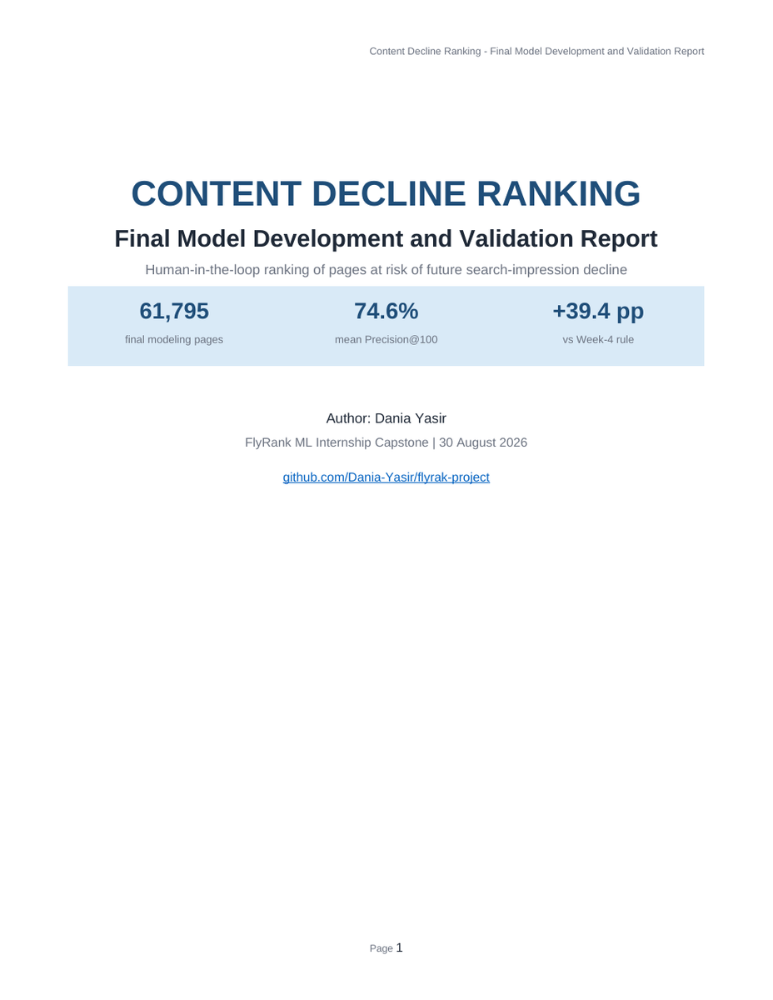

01Machine Learning · Capstone
Content Decline Ranking
A human-in-the-loop ranking system that prioritizes content pages at higher risk of future search-impression decline, while keeping validation client-disjoint and leakage-aware.
61,795final modeling pages
74.6%mean Precision@100
+39.4 ppvs Week-4 rule
What I focused on: feature engineering, leakage control, Random Forest validation, ranking utility, error analysis, and cautious decision-support framing.